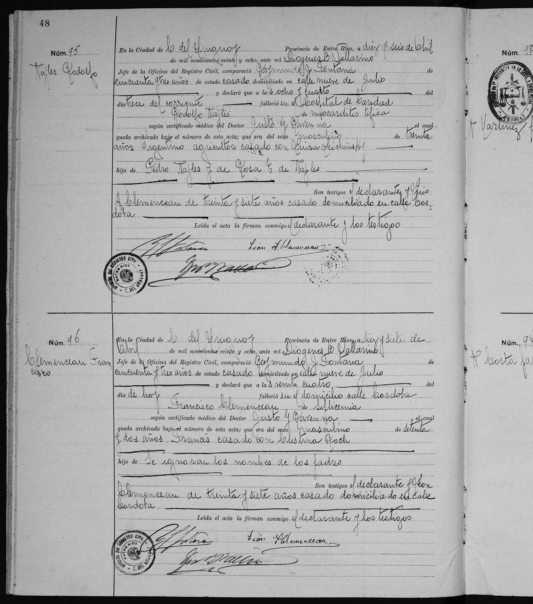
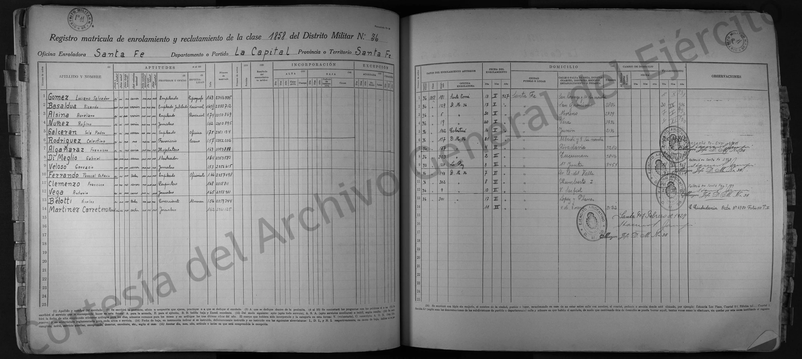
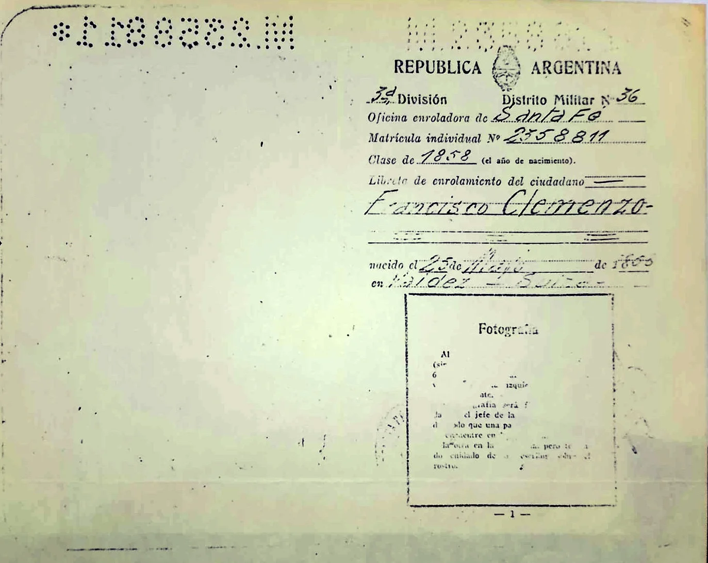
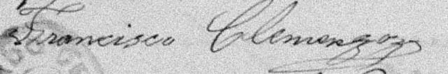
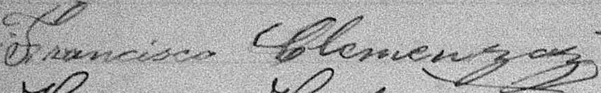
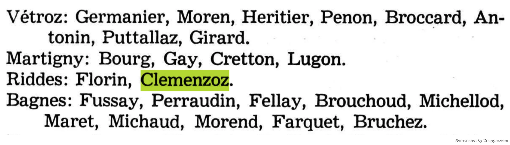
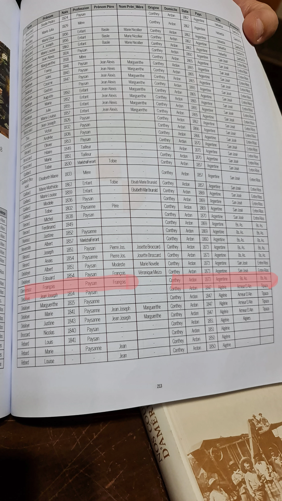

La historia
El emigrante fundador. Huérfano de padre a los ~14, figura partiendo a Argentina en 1873 junto a un grupo de vecinos de Ardon. Reaparece hacia 1886 casado con la hija de otros colonos valesanos en la zona de San José/Colón. Nunca cortó del todo con el Valais: en 1905, treinta años después de partir, el tribunal de Conthey todavía le giraba —vía el Consulado de Suiza en Buenos Aires— el producto de la liquidación de sus bienes en Riddes.
| Fila | Nombre | Rol | Identificación |
|---|---|---|---|
| 1 | Clémensoz François | Paysan (père François, origine Conthey) | François Clemenzoz (padre) |
| 2 | Clémensoz Stalder Louise | Mère (origine Salins) | Marie Louise Stalder (madre) |
| 3 | Clémensoz Josephine | Enfant | Josephine Clemenzo |
| 4 | Clémensoz Joseph | Enfant | Jose Clemenzo |
| 5 | Clémensoz François | Enfant | p26 |
| 6 | Clémensoz Etienne | Enfant | Etienne Clemenzo |
| 7 | Clémensoz Anaïs | Enfant nat. (mère J. Clémensoz) | Anaiis Clemenzo, hija de Josephine |
| 8 | Clémensoz Edvige | Enfant nat. (mère J. Clémensoz) | Edwige Clemenzo, hija de Josephine |
| 9 | Stalder François | Paysan (mère J. Clémensoz) | sin identificar — ver «Qué falta / hipótesis» |
Dos correcciones sobre lo que se venía asumiendo: no fue una emigración escalonada — viajaron los nueve juntos —, y el aviso del usuario corrigió una lectura mía: no leer «Mère» como «viuda», es solo el campo de rol dentro del hogar, igual que «Paysan» o «Enfant» en las otras filas. Eso implica que François padre (François Clemenzoz) también viajó, lo cual tensiona la ventana de muerte 1870-1874 estimada por el documento D10/86 (que asume que ya había fallecido para enero de 1874) — sin dato que lo resuelva todavía. La misma Louise Stalder + Stalder François reaparecen en la sección Sion/Salins del mismo libro (p. 209), con «origine» distinta (Sion en vez de Salins) — probable doble listado administrativo del mismo viaje, no dos viajes distintos.
Censo 1895 — a los 36 años, casado, sabía leer y escribir y poseía propiedad raíz; su mujer Celestina declaró 9 años de matrimonio y 5 hijos. El árbol solo documenta 4 nacidos antes de esa fecha (Pedro, Francisca, León 1891, Felix 1894) — la «Celestina» de 8 años del censo puede ser la quinta o ser Francisca (ver «Qué falta / hipótesis»).
Uso oscilante del apellido (Clemenzo/Clemenzoz, firma distinta en cada registro); en 1892 el bautismo de León fue corregido décadas después; en 1900 declara a Carlota hija «civil» en lugar de «legítima».
Cronología
| Año | Fuente | Qué dice |
|---|---|---|
| 1858 | Acta (31 de mayo) | Nace en Riddes |
| 1870 | Censo federal suizo, Riddes (30-11/1-12) | 12 años, en el hogar de François Clemenzoz; familia completa |
| 1871–74 | D 10/86 lo implica | Muere su padre François Clemenzoz |
| 1873 | Registre des émigrés (DI 358), reproducido en Valaisans émigrés au 19ème siècle de Maurice Carron, p.250-251 | Entrada de Riddes: la familia entera figura junta — François (père, François Clemenzoz), Louise Stalder (mère, Marie Louise Stalder, origine Salins), y como «Enfant»: Josephine (Josephine Clemenzo), Joseph (Jose Clemenzo), François (p26) y Etienne (Etienne Clemenzo). Además, dos «enfant naturel» con madre «J. Clémensoz» = Anaïs (Anaiis Clemenzo) y Edwige (Edwige Clemenzo), las hijas de Josephine — viajaron con ella. Viaja en grupo con familias Bérard y Delaloye de Ardon, varias con destino San José, Entre Ríos |
| 1874 | AC Riddes D 10/86 (11 de enero) | François Jardin, «faisant pour les enfants de François Clemenzoz», vende 1,5 cuillerées en Chassoure — liquidación de los huérfanos |
| ~1886 | Censo 1895 (9 años de matrimonio) | Casa con Celestina Roh, probablemente en San José/Colón |
| ~1887 | Censo 1895 (hija de 8 años) | Nace en Entre Ríos su hija «Celestina» — la familia ya estaba radicada |
| 1891 | Acta de nacimiento de León Francisco (16-12) | San José, Entre Ríos |
| 1895 | Censo nacional (10 de mayo), Colón | 36 años, suizo, casado, sabe leer y escribir, posee propiedad raíz, profesión [¿comerciante?] |
| 1897 | Acta de nacimiento de Luisa | Colonia Yeruá; firma «Clemenzoz» |
| 1899 | Defunción de su hermano José (Jose Clemenzo) | Colonia Yeruá |
| 1900 | Acta de Carlota | Declara hija «civil» en lugar de «legítima» |
| 1904 | Carta de los «cousins Lambiel» de Riddes (30-08) | Inicia la liquidación de los bienes suizos |
| 1905 | Carta del Tribunal de Conthey (4-02), notario Alf. Frossard, Ardon | Liquidación de «vos avoirs à Riddes»: 1.135 frs cobrados a comienzos de enero, 105 frs de gastos; depositados 1.030 frs el 28-01 en la Caisse d'Épargne du Canton du Valais (Sion): 829,25 frs para François y 200,75 para Etienne, a remitir vía Consulado de Suiza en Buenos Aires. La carta menciona dos cartas previas: la de los «cousins Lambiel» de Riddes (30-08-1904) y una del propio notario (30-09-1904) |
| 1913 | Matrimonio de León Francisco, Santa Fe | Francisco figura como carpintero |
| 1927 | Enrolamiento, Distrito Militar N° 36 (8-06) | Clase 1858, matrícula 2.358.811, carpintero, 1,68 m, domicilio calle Humberto I, ciudad de Santa Fe |
| 1928 | Acta de defunción (17-04) | Muere en Concepción del Uruguay, calle Córdoba (domicilio de su hijo León); declara Raymundo J. Fontana |
Censo 1895, transcripción de las filas del hogar:
| Fila | Nombre | Edad | E. civil | Nación | Profesión | Lee | Prop. raíz | Hijos | Años matr. |
|---|---|---|---|---|---|---|---|---|---|
| 13 | Clemenzo, F.co | 36 | C | Suizo | [¿Com.te?] | sí | sí | — | — |
| 14 | id, Celestina de | 28 | C | (suiza) | — | sí | — | 5 | 9 |
| 15 | id, Celestina | 8 | — | argentina, E. Ríos | — | sí | — | — | — |
La edad 36 cierra exacta: el censo fue el 10-05-1895, tres semanas antes de su cumpleaños 37.
Qué falta / hipótesis
El vacío 1873–1886. La entrada de 1873 es verosímil pero no concluyente. A favor: el padre se llama François ✓; «Conthey/Ardon» encaja con la burguesía histórica de la familia (el tribunal del distrito de Conthey seguía administrando sus asuntos en 1905, y el censo de 1829 los registra como burgueses de Riddes domiciliados en Ardon); viaja con un grupo de Ardon del que varios integrantes van directo a San José, Entre Ríos; y el momento encaja: recién muerto el padre, con la venta de la tierra de los huérfanos en enero de 1874 como posible financiación del pasaje. En contra: la fila no trae año de nacimiento, tendría 15 años y viajaría sin otro Clemenzoz en la página; y el Registre des émigrés es retrospectivo, incompleto y con destinos genéricos («Bs. As.» puede significar solo el puerto).
Lo que el censo de 1895 aporta: el boletín no preguntaba años de residencia (esa columna no existe en este formulario), pero la hija «Celestina, 8 años, argentina, nacida en Entre Ríos» fija a la familia en la provincia a más tardar en ~1887, y los «9 años de matrimonio» dan el casamiento hacia 1886. El vacío real queda entre los 15 y los 28 años de Francisco: ¿estuvo esos años en Buenos Aires? ¿en la colonia desde el principio como peón sin registro? ¿o llegó más tarde de lo que dice el registro?
Identidad del tutor François Jardin (D 10/86): si fue tutor legal de los huérfanos, los protocolos de tutela del distrito de Martigny documentarían qué pasó con los menores — incluso una autorización de emigración.
Trayectoria de oficios: paysan (1873) → ¿comerciante? con propiedad raíz (1895) → carpintero (1913, 1927). El boletín de 1895 abre la pregunta de qué actividad tenía en la colonia.
Fila 9 del registro de 1873 («Stalder François», jardinero) queda sin identificar — comparte madre «J. Clémensoz» con Anaïs y Edwige, así que podría ser un tercer hijo de Josephine no documentado. Es hipótesis, no está creado en el árbol.
Notas y curiosidades (de la versión anterior, vigentes): uso oscilante del apellido (Clemenzo/Clemenzoz, firma distinta en cada registro); en 1892 el bautismo de León fue corregido décadas después; en 1900 declara a Carlota hija «civil» en lugar de «legítima».
Líneas de investigación
- Buscar «Clemenzo/Clemenzoz» en recensements.vallesiana.ch, censo 1880, distrito Martigny (Riddes) — verificación negativa para el vacío 1873-1886: si no queda ningún Clemenzo(z) en Riddes, toda la familia había partido
-
Buscar a José (Jose Clemenzo), Etienne (Etienne Clemenzo), Josephine (Josephine Clemenzo) y Marie Louise Stalder (Marie Louise Stalder) en el libro de Carron— 2026-08-12: los cuatro están en la misma entrada de 1873, junto al padre François Clemenzoz. Ver «La historia» - Solicitar al AEV el asiento original DI 358 de «Clémensoz François, 1873» (archives@admin.vs.ch) — el original puede traer más datos que la tabla impresa de Carron (fecha exacta, agencia, acompañantes)
- Investigar al tutor François Jardin (D 10/86) en los protocolos de tutela del distrito de Martigny — podrían documentar una autorización de emigración de los huérfanos
- Nuevo 2026-08-12: identificar a «Stalder François» (jardinier), listado en la misma entrada de 1873 con madre «J. Clémensoz» — mismo patrón que Anaïs/Edwige. ¿Un tercer hijo de Josephine (Josephine Clemenzo) no documentado, nacido ~1871-73, registrado con el apellido de soltera de su abuela en vez de Clemenzoz? Buscar bautismo en Riddes 1871-73
- Nuevo 2026-08-12: reconciliar la fecha de muerte de François Clemenzoz (ventana 1870-1874, hipótesis basada en el documento D10/86 de enero 1874) con que él mismo figura como cabeza de familia viajando en el registro de emigrados de 1873 — o murió ya en Argentina poco después de llegar, o el documento D10/86 no implica lo que se pensaba. Sin dato que lo resuelva por ahora (aviso del usuario, 2026-08-12)
- Buscar acta de matrimonio Francisco Clemenzo × Celestina Roh (~1886) en registros parroquiales de San José/Colón; consultar índices del Centro de Genealogía de Entre Ríos — ¿llegaron a casarse?
- Identificar a la hija «Celestina, 8 años» del censo 1895 (¿es Francisca Francisca Clemenzo? ¿hija no registrada n.~1887?) y buscar actas de Pedro (Pedro Clemenzo) y Francisca (Francisca Clemenzo)
- Buscar variantes Clemenzo/Clemenzoz/Clémensoz en CEMLA (cemla.com) y en los registros migratorios del AGN (1882-1937)
- Verificar la anotación «Falleció en Santa Fe» en el original del registro de enrolamiento (Archivo General del Ejército)
- Identificar a los «cousins Lambiel» de Riddes — carta del 30-08-1904 → avance 2026-06-11: probable hogar hallado en censo 1870 (Plan de Villy, vecinos de la familia): Jean Antoine Lambiel × Elisabeth née Clementz, posiblemente la tía Marie Elizabet (Marie Elizabet Clemenzo) — serían primos hermanos literales. Ver ficha Marie Elizabet Clemenzo para las dos candidatas y cómo decidirlo
- Revisar el boletín censal 1895 original por el «Rog Mariano, 14 años» de la nota anterior (la relectura de 2026-06-11 no lo encontró; las filas vecinas son de otras familias)
- Edad de Celestina Roh (María Celestina Roh): el censo 1895 le da 28 años (n.~1867, suiza) pero el árbol dice 1863 — resolver con su acta
Fuentes
- Censo federal suizo 1870, Riddes (imagen François Clemenzoz-Marie Louise Stalder-Jose Clemenzo-p26-Etienne Clemenzo-77-Anaiis Clemenzo-Edwige Clemenzo-1870-riddes-censo.webp; transcripto en el post clan-clemenzo) — 2026-06-11
- Tabla de emigrantes, libro impreso p. 213 (imagen p26-posibleLlegada.webp; probable Nos cousins d'Amérique, Carron & Carron, sobre el Registre des émigrés DI 358) — 2026-06-11
- Valaisans émigrés au 19ème siècle, Maurice Carron — sección Riddes, p. 250-251 (registro de emigrados DI 358, tabla completa de la familia): archivo
claude_mira_aqui/FamiliaClemenzo_llegada_argentina_1873.pdf(no comitido al repo, es un escaneo de libro publicado) — 2026-08-12 - Lista de apellidos de colonos por comuna de origen («Riddes: Florin, Clemenzoz»; imagen p26-libro-colonia.webp, probable Libro de Oro del Centenario de la Colonia San José) — 2026-06-11
- Carta del Tribunal de Conthey, Ardon, 4-02-1905, notario Alf. Frossard (imágenes p26-Etienne Clemenzo-carta-conthey-1/2.webp; transcripción completa en Carta del tribunal de Conthey (1905) — François Clemenzo · Etienne Clemenzo) — 2026-06-11
- Censo nacional argentino 1895, Colón, E.R., filas 13-15 (imagen p26-censo-1895.webp; p26-María Celestina Roh-Maria Celestina Roh-1895-censo-1.webp es el mismo escaneo duplicado) — 2026-06-11
- Registro de enrolamiento, clase 1858, Distrito Militar N° 36, Santa Fe, 8-06-1927 (imagen p26-enrolamiento-militar.webp) — 2026-06-11
- Acta de defunción, Concepción del Uruguay, 17-04-1928 (imagen p26-defuncion.webp)
- Plateforme Emigration Valais (emigration-valais.ch): descripción del Registre des émigrés DI 358 — 2026-06-11
Versión anterior de esta investigación (archivada, superada por lo de arriba)
Versión anterior (2026-06-11)
Cronologías
Residencias
| Año | Lugar | Detalle / Observación |
|---|---|---|
| 1858 | Conthey, Valais, Suiza | Censo de Conthey |
| 1891 | Argentina, Entre Rios, San Jose | Acta de nacimiento de Leon Francisco |
| 1895 | Argentina, Entre Rios, San Jose | Censo |
| 1897 | Argentina, Entre Rios, Colonia Yerua | Nacimiento de Luisa |
| 1899 | Argentina, Entre Rios, Colonia Yerua | Fallecimiento de su hermano Jose |
| 1913 | Argentina, Santa Fe | Matrimonio de León Francisco |
| 1928 | Argentina Entre Rios, Concepción del Uruguay | Acta de defunción |
Vida
| Año | Evento | Detalle / Observación |
|---|---|---|
| 1858 | Nacimiento en Suiza | |
| 1873 | Posible Llegada a Argentina | Ver libro |
| 1892 | Bautismo de León Francisco | Apellido corregido décadas después |
| 1897 | Nacimiento de Luisa | Firma como Clemenzoz |
| 1900 | Nacimiento de Carlota | Pone es hija "civil" en lugar de hija "legitima" |
| 1913 | Matrimonio de León Francisco | Figura como Carpintero |
| 1928 | Defunción en Argentina |
Censo de 1895
Dice ahí que tiene 9 años de matrimonio con Celestina. Por lo tanto, la fecha probable de matrimonio o que conoció a Celestina es 1886. La ultima fila parece pertenecer a la familia de Francisco. Se lee algo como: Rog Mariano, es varón de 14 años, sabe leer y escribir y es oriundo de Entre Rios. Será algún hijo previo de Celestina o de su hermana Mariana?
Enrolamiento militar
Oficina Enroladora: Santa Fe Capital. Distrito Militar Nro 36. Estatura: 1,68 m. Oficio: carpintero. Matricula: 2.358.811. Domicilio: Humberto I
Defunción
Lugar: Concepción del Uruguay. El declarante es Raymundo J. Fontana de 53 años domiciliado en calle 9 de julio. Francisco fallece en el domicilio de la calle Cordoba. Testigos: Raymundo J. Fontana y Leon Francisco Clemenzo (domiciliado en calle Cordoba)
Documentos

Acta de defunción de François Clemenzo Carta del tribunal de Conthey (1905) — François Clemenzo · Etienne Clemenzo
2 páginas
Carta del tribunal de Conthey (1905) — François Clemenzo · Etienne Clemenzo
2 páginas
 Censo de Colon de 1895 — Roh · Clemenzo
2 páginas
Censo de Colon de 1895 — Roh · Clemenzo
2 páginas
 Censo de Riddes de 1870 — Clemenzo · Clemenzoz · Stalder
Censo de Riddes de 1870 — Clemenzo · Clemenzoz · Stalder

Enrolamiento militar de Francisco Clemenzo
Enrolamiento militar de François Clemenzo en Santa Fe 4 páginas
Firma de François Clemenzo (1)
Firma de François Clemenzo (2)
François Clemenzo en el libro de la colonia
Posible registro de llegada de François Clemenzo